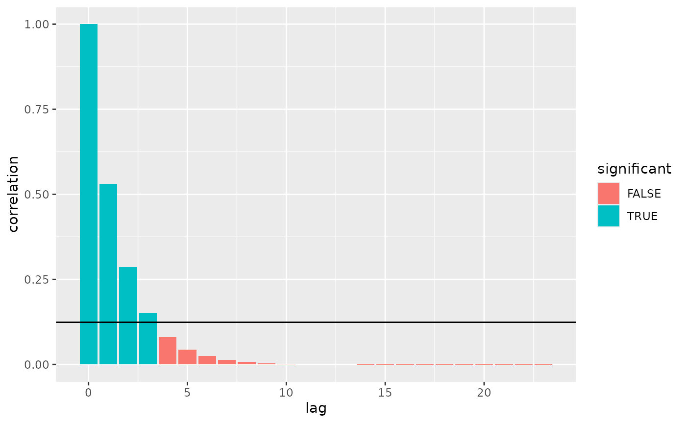
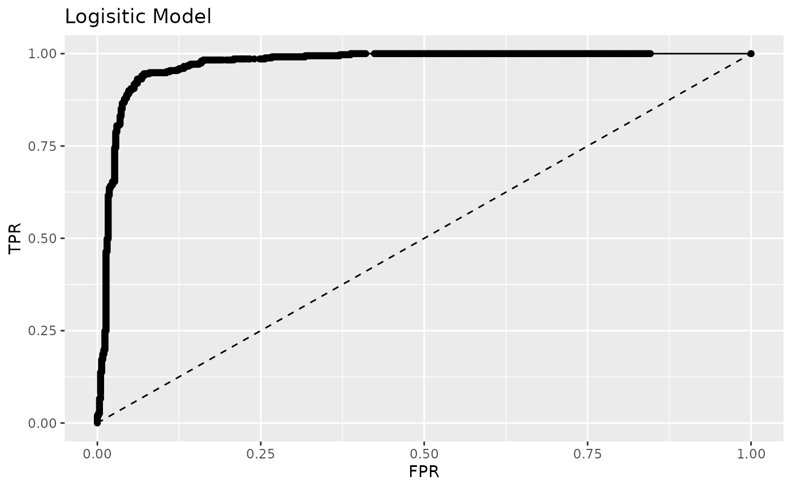
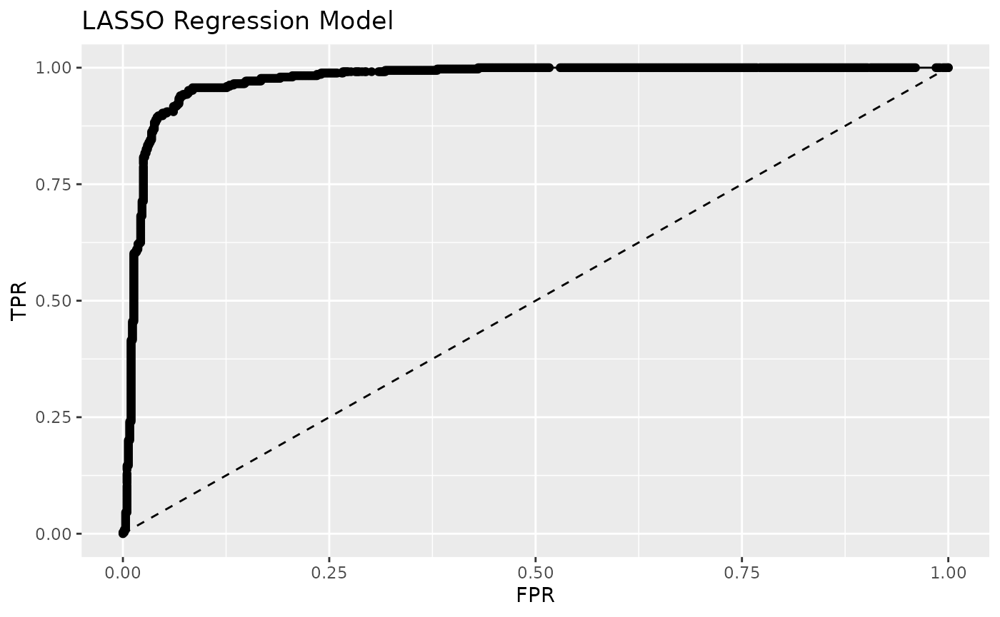
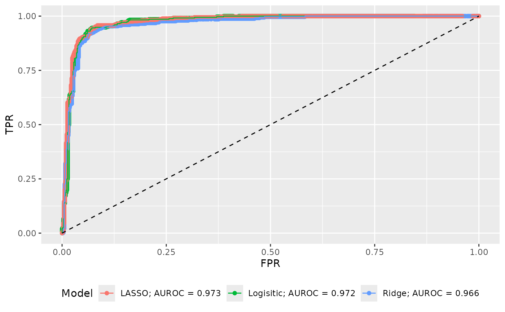
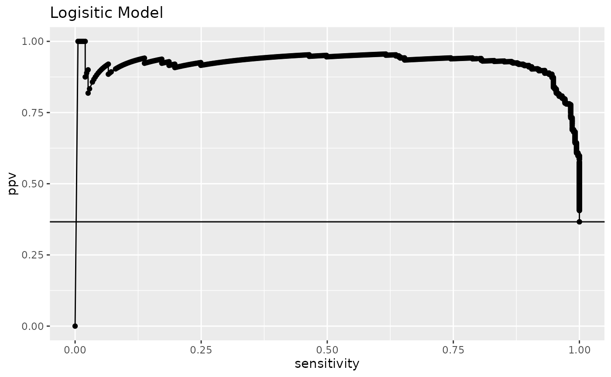
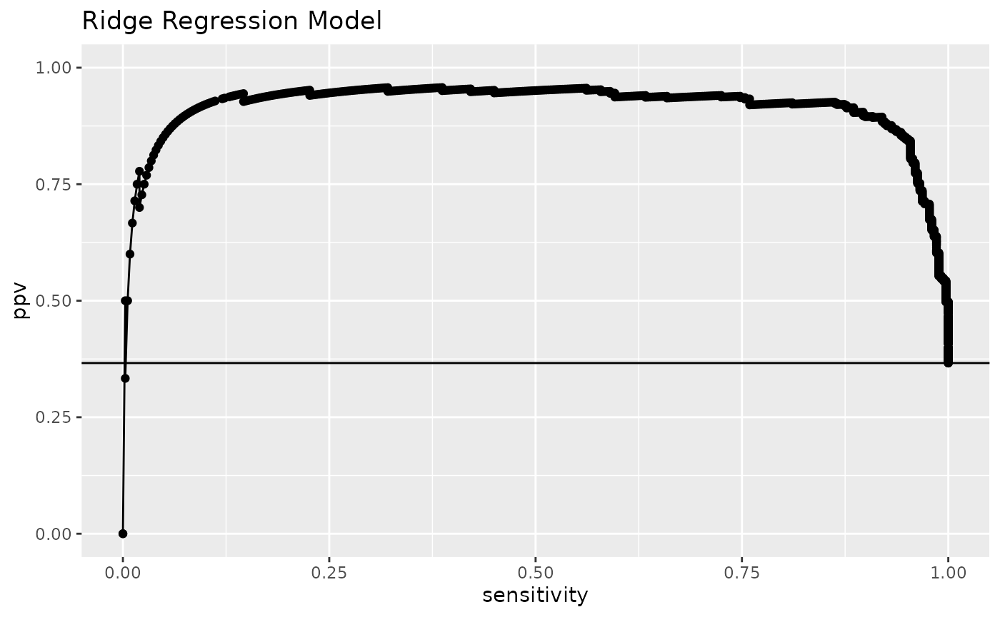
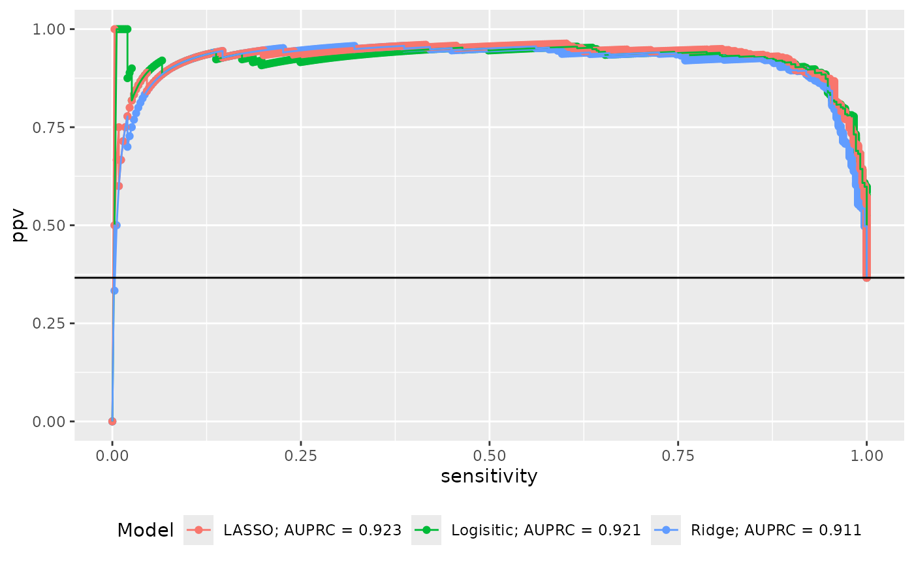

There are several graphics generated within qwraps2. The naming
convention for the “quick” plots was inspired by the (deprecated) ggplot2
function qplot. The development, flexibility, and
robustness of these functions vary. Some “tips and tricks” are
provided.
qacf: Autocorrelation Plots
Generate an example data set.
set.seed(42)
n <- 250
x1 <- x2 <- x3 <- x4 <- vector('numeric', length = n)
x1[1] <- runif(1)
x2[1] <- runif(1)
x3[1] <- runif(1)
x4[1] <- runif(1)
# white noise
Z.1 <- rnorm(n, 0, 1)
Z.2 <- rnorm(n, 0, 2)
Z.3 <- rnorm(n, 0, 5)
for(i in 2:n)
{
x1[i] <- x1[i-1] + Z.1[i] - Z.1[i-1] + x4[i-1] - x2[i-1]
x2[i] <- x2[i-1] - 2 * Z.2[i] + Z.2[i-1] - x4[i-1]
x3[i] <- x3[i-1] + x2[i-1] + 0.2 * Z.3[i] + Z.3[i-1]
x4[i] <- x4[i-1] + runif(1, 0.5, 1.5) * x4[i-1]
}
testdf <- data.frame(x1, x2, x3, x4)
# Base acf plot for one variable
acf(testdf$x1)
# qacf plot for one variable
qacf(testdf$x1)
qacf(testdf$x1, show_sig = TRUE)
# more than one variable
acf(testdf)
qacf(testdf)
qacf(testdf, show_sig = TRUE)Tips and tricks
The implementation of qacf is based on the use of
stats::acf to produce the statistics needed for the plot.
If you want to get at the data itself to build your own acf plot you can
extract the data frame from the qacf return:
qblandaltman: Bland Altman Plot
Introduced in [@altman1983measurement]
and [@bland1986statistical], the
qblandaltman method builds ggplot2 style Bland Altman plots. For
examples we use the provided pefr data set which was transcribed from
[@bland1986statistical]. See
vignette("qwraps2-data-sets", package = "qwraps2") For more
details on that data set.
The following replicates the figures in [@bland1986statistical].
Using the first measurement only:
pefr_m1 <-
cbind("Large" = pefr[pefr$measurement == 1 & pefr$meter == "Wright peak flow meter", "pefr"],
"Mini" = pefr[pefr$measurement == 1 & pefr$meter == "Mini Wright peak flow meter", "pefr"])A standard x-y style plot and a correlation coefficient suggests that the two meters provide reasonably similar results.
cor(pefr_m1)
## Large Mini
## Large 1.0000000 0.9432794
## Mini 0.9432794 1.0000000
ggplot2::ggplot(data = as.data.frame(pefr_m1)) +
ggplot2::aes(x = Large, y = Mini) +
ggplot2::geom_point() +
ggplot2::xlab("Large Meter") +
ggplot2::ylab("Mini Meter") +
ggplot2::xlim(0, 800) +
ggplot2::ylim(0, 800) +
ggplot2::geom_abline(slope = 1)
However, for many reasons, the above is misleading. One simple note: correlation is not a metric for agreement, i.e., perfect agreement would be shown if all the data points fell on the line of equality whereas perfect correlation occurs when the data points are simply co-linear.
The Bland Altman plot plots the average value on the x-axis and the difference in the measurements on the y-axis:
# default plot
qblandaltman(pefr_m1)
# modified plot
ggplot2::last_plot() +
ggplot2::xlim(0, 800) +
ggplot2::ylim(-100, 100) +
ggplot2::xlab("Average of two meters") +
ggplot2::ylab("Difference in the measurements")There is no distinct relationship between the differences and the average, but the difference in the measurements between the two meters was observed to range between -73 and 81 liters per minute. Such a discrepancy between the meters is not observable from the simple x-y plot.
Reliability, or repeatability, of measurements can also be investigated with a Bland Altman plot.
pefr_mini <-
cbind(m1 = pefr[pefr$measurement == 1 & pefr$meter == "Mini Wright peak flow meter", "pefr"],
m2 = pefr[pefr$measurement == 2 & pefr$meter == "Mini Wright peak flow meter", "pefr"])
qblandaltman(pefr_mini)qkmplot: Kaplan Meier Plots
# create a survfit object
require(survival)
## Loading required package: survival
leukemia.surv <- survival::survfit(survival::Surv(time, status) ~ x, data = survival::aml)
# base R km plot
survival:::plot.survfit(leukemia.surv, conf.int = TRUE, lty = 2:3, col = 1:2)
# qkmplot
qkmplot(leukemia.surv, conf_int = TRUE)
## Warning: Removed 1 rows containing non-finite values
## (`stat_step_ribbon()`).The function qkmplot_bulid_data_frame can be used to
generate a data.frame needed for building a KM plot. This could be
helpful for creating bespoke plots.
leukemia_km_data <- qkmplot_bulid_data_frame(leukemia.surv)
head(leukemia_km_data, 3)
## time n.risk n.event n.censor surv upper lower strata
## 2 0 11 0 0 1.0000000 1 1.0000000 x=Maintained
## 3 9 11 1 0 0.9090909 1 0.7541338 x=Maintained
## 4 13 10 1 1 0.8181818 1 0.6192490 x=Maintained
qkmplot(leukemia_km_data)Intercept only models are easy to plot too.
intonly_fit <- survival::survfit(survival::Surv(time, status) ~ 1, data = survival::aml)
survival:::plot.survfit(intonly_fit, conf.int = TRUE)
qkmplot(intonly_fit, conf_int = TRUE)qroc and qprc: Receiver Operating Curve and Precision Recall Curve
Starting in qwraps2 version 0.6.0, the methods for building
these graphics have been fundamentally changed as part of a major
refactor of the confusion_matrix method which replaces a
lot of the code that qroc and qprc were built
on.
For this work we will consider a couple models for categorizing email
and spam or not based on the Spambase [@spambase] data. More details on this data set
can be found in the
vignette("qwraps2-data-sets", package = "qwraps2")
Start by defining a training and validation splits of the spambase data
set.seed(42)
tidx <- runif(nrow(spambase)) <= 0.80
xidx <- which(names(spambase) != "spam")
yidx <- which(names(spambase) == "spam")
training_set <- spambase[tidx, ]
validating_set <- spambase[!tidx, ]Train a few models:
logistic_model <-
glm(
spam ~ .
, data = training_set
, family = binomial()
)
## Warning: glm.fit: fitted probabilities numerically 0 or 1 occurred
ridge_model <-
glmnet::cv.glmnet(
y = training_set[, yidx]
, x = as.matrix(training_set[, xidx])
, family = binomial()
, alpha = 0
)
lasso_model <-
glmnet::cv.glmnet(
y = training_set[, yidx]
, x = as.matrix(training_set[, xidx])
, family = binomial()
, alpha = 1
)Generate the predicted values on the validation set:
validating_set$logistic_model_prediction <-
predict(
logistic_model
, newdata = validating_set
, type = "response"
)
validating_set$ridge_model_prediction <-
as.numeric(
predict(
ridge_model
, newx = as.matrix(validating_set[, xidx])
, type = "response"
, s = "lambda.1se"
)
)
validating_set$lasso_model_prediction <-
as.numeric(
predict(
lasso_model
, newx = as.matrix(validating_set[, xidx])
, type = "response"
, s = "lambda.1se"
)
)To build ROC and/or PRC plots start by building the confusion matrix
for each model. The qwraps2 function confusion_matrix makes
this easy.
cm1 <- confusion_matrix(spam ~ logistic_model_prediction, data = validating_set)
cm2 <- confusion_matrix(spam ~ ridge_model_prediction, data = validating_set)
cm3 <- confusion_matrix(spam ~ lasso_model_prediction, data = validating_set)The ROC and PRC plots are ggplot objects and can be modified as you would any other ggplot object.


Graphing all three curves in one image with AUROC in the legend:
roc_plot_data <-
rbind(
cbind(Model = paste("Logisitic; AUROC =", frmt(cm1$auroc, 3)), cm1$cm_stats)
, cbind(Model = paste("Ridge; AUROC =", frmt(cm2$auroc, 3)), cm2$cm_stats)
, cbind(Model = paste("LASSO; AUROC =", frmt(cm3$auroc, 3)), cm3$cm_stats)
)
qroc(roc_plot_data) +
ggplot2::aes(color = Model) +
ggplot2::theme(legend.position = "bottom")
Similar for PRC:



prc_plot_data <-
rbind(
cbind(Model = paste("Logisitic; AUPRC =", frmt(cm1$auprc, 3)), cm1$cm_stats)
, cbind(Model = paste("Ridge; AUPRC =", frmt(cm2$auprc, 3)), cm2$cm_stats)
, cbind(Model = paste("LASSO; AUPRC =", frmt(cm3$auprc, 3)), cm3$cm_stats)
)
qprc(prc_plot_data) +
ggplot2::aes(color = Model) +
ggplot2::geom_hline(yintercept = cm1$prevalence) +
ggplot2::theme(legend.position = "bottom")
Session Info
sessionInfo()
## R version 4.3.2 (2023-10-31)
## Platform: x86_64-pc-linux-gnu (64-bit)
## Running under: Ubuntu 22.04.3 LTS
##
## Matrix products: default
## BLAS: /usr/lib/x86_64-linux-gnu/openblas-pthread/libblas.so.3
## LAPACK: /usr/lib/x86_64-linux-gnu/openblas-pthread/libopenblasp-r0.3.20.so; LAPACK version 3.10.0
##
## locale:
## [1] LC_CTYPE=C.UTF-8 LC_NUMERIC=C LC_TIME=C.UTF-8
## [4] LC_COLLATE=C.UTF-8 LC_MONETARY=C.UTF-8 LC_MESSAGES=C.UTF-8
## [7] LC_PAPER=C.UTF-8 LC_NAME=C LC_ADDRESS=C
## [10] LC_TELEPHONE=C LC_MEASUREMENT=C.UTF-8 LC_IDENTIFICATION=C
##
## time zone: UTC
## tzcode source: system (glibc)
##
## attached base packages:
## [1] stats graphics grDevices utils datasets methods base
##
## other attached packages:
## [1] survival_3.5-7 qwraps2_0.6.0
##
## loaded via a namespace (and not attached):
## [1] sass_0.4.8 utf8_1.2.4 generics_0.1.3 shape_1.4.6
## [5] stringi_1.8.3 lattice_0.21-9 digest_0.6.33 magrittr_2.0.3
## [9] evaluate_0.23 grid_4.3.2 iterators_1.0.14 fastmap_1.1.1
## [13] foreach_1.5.2 jsonlite_1.8.8 Matrix_1.6-1.1 glmnet_4.1-8
## [17] purrr_1.0.2 fansi_1.0.6 scales_1.3.0 codetools_0.2-19
## [21] textshaping_0.3.7 jquerylib_0.1.4 cli_3.6.2 rlang_1.1.2
## [25] munsell_0.5.0 splines_4.3.2 withr_2.5.2 cachem_1.0.8
## [29] yaml_2.3.8 tools_4.3.2 memoise_2.0.1 dplyr_1.1.4
## [33] colorspace_2.1-0 ggplot2_3.4.4 vctrs_0.6.5 R6_2.5.1
## [37] lifecycle_1.0.4 stringr_1.5.1 fs_1.6.3 ragg_1.2.7
## [41] pkgconfig_2.0.3 desc_1.4.3 pkgdown_2.0.7 pillar_1.9.0
## [45] bslib_0.6.1 gtable_0.3.4 glue_1.6.2 Rcpp_1.0.11
## [49] systemfonts_1.0.5 xfun_0.41 tibble_3.2.1 tidyselect_1.2.0
## [53] highr_0.10 knitr_1.45 farver_2.1.1 htmltools_0.5.7
## [57] rmarkdown_2.25 labeling_0.4.3 compiler_4.3.2